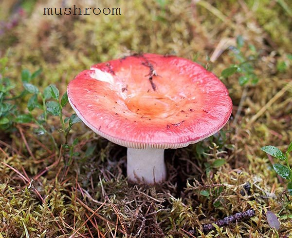

<picture> (от англ. picture — картинка, изображение) представляет собой контейнер для хранения нескольких элементов <source>, которые поддерживают элемент <img>. Это позволяет указывать разные изображения с учётом размера экрана, плотности пикселей, формата изображения и других параметров. Элемент <picture> может применяться для:
для экранов ретина можно показывать картинку большего размера
выводить рисунки разного размера для мобильных и настольных устройств
отображать изображения разных пропорций, учитывающих ориентацию устройства
выводить изображение в формате SVG или ином, отличном от указанном в <img>
Внутри <picture> содержится ноль или несколько элементов <source>, которые идут перед одним элементом <img>.
Наличие элемента <img>ОБЯЗАТЕЛЬНО для работы <picture>.
Если использовать изображение в формате .webp то нужно указать type="image/webp" в теге <source> иначе в Safari не будут грузиться запасные изображения.
internet Explorer не поддерживает данный элемент.
Пример.

В данном примере применяется два изображения — одно отображается при альбомной ориентации экрана, второе при портретной ориентации. Чтобы заметить эффект на настольном компьютере, достаточно изменить размеры окна браузера, задав ему разные пропорции.
В данном примере применяется два изображения — одно отображается при обычной плотности пикселей, второе при плотности пикселей х2. При минимальной ширине экрана менее 35em - загрузится изображение из <img>